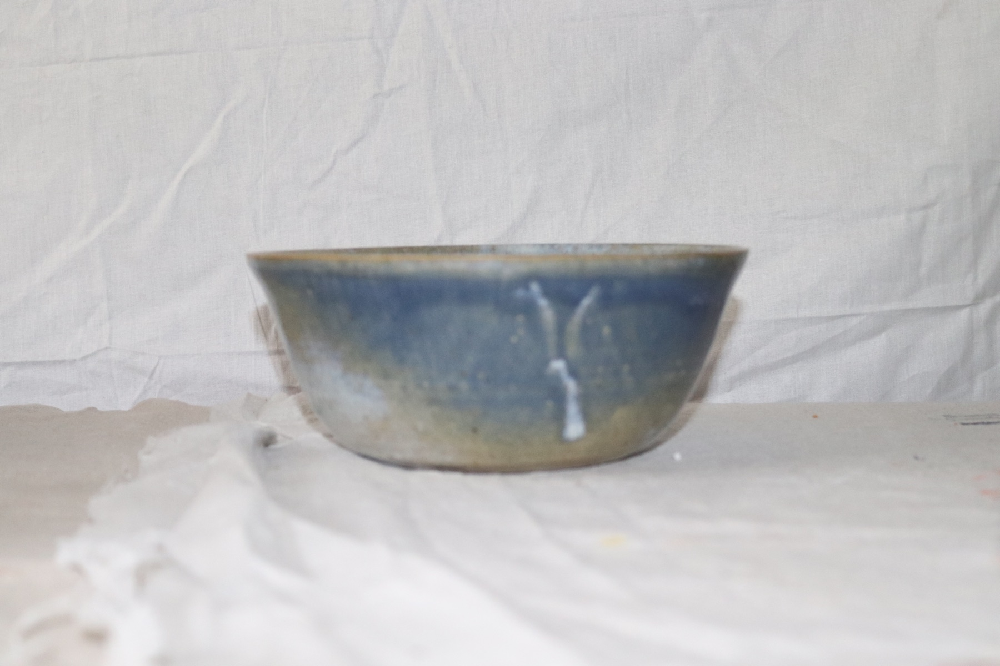

About the studio
Useful pots, honestly made.
The Honest Potter is a small Liverpool pottery studio making practical stoneware, testing glazes, and slowly building a body of work one firing at a time.
This is not a factory and it is not pretending to be a grand old pottery house. It is a working studio: clay on the table, notes in the margins, pieces that improve by being made, handled, used, and made again.


Why The Honest Potter?
Because clay has a way of telling the truth. A rim remembers a hesitation. A glaze records the heat. A good mug has to feel right in the hand, not just look good for a photograph.
The work here is made with that in mind. Bowls should be generous. Mugs should be easy to reach for. Decorative pieces should still feel like they came from real materials, not a catalogue.
There is plenty still being learned, especially around glaze, surface, and repeatable forms. That learning is part of the site on purpose. The gallery shows finished work; the coming Studio Notes section will show more of the testing, recipes, and small discoveries behind it.
The studio is based in West Derby, Liverpool. Alongside making pots, there is a 40 litre kiln available for local bisque and glaze firings when other makers need kiln space.
What you will find here
The site is growing around the work itself: finished pieces in the gallery, kiln-hire information for local makers, and soon a quieter Studio Notes section for glaze tests, recipes, and workshop progress.
- Recent pottery and experiments in the gallery.
- Clear contact routes for enquiries, pieces, commissions, or kiln time.
- Studio Notes when the first glaze test write-up is ready.